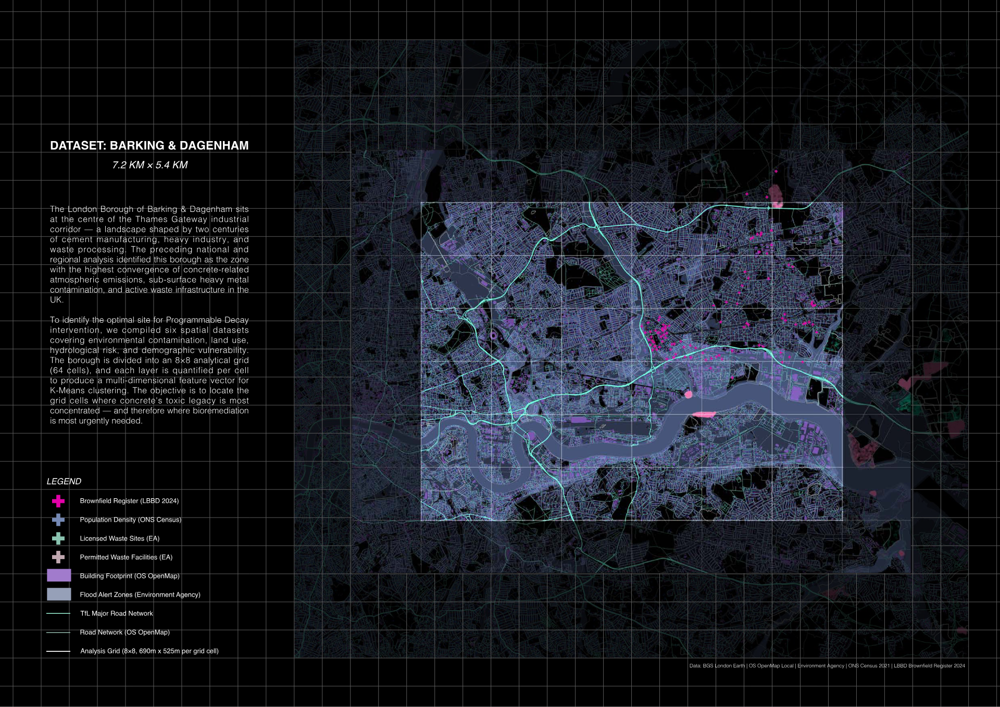
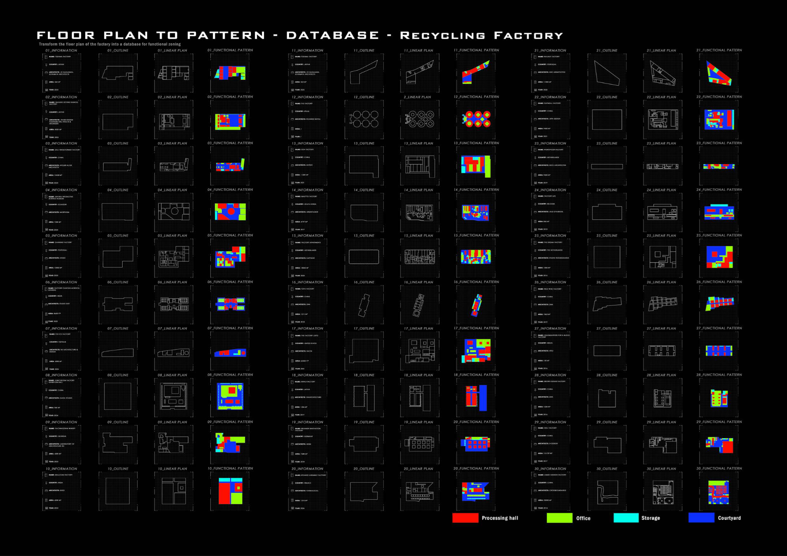
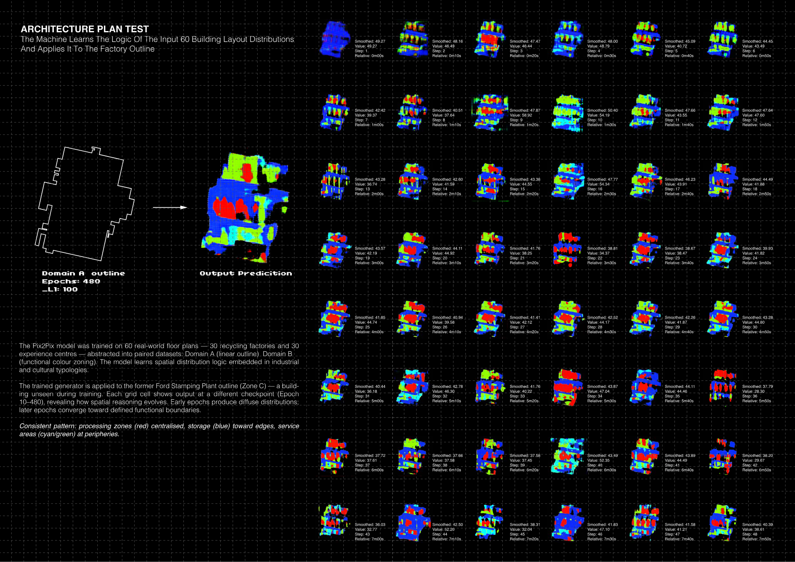
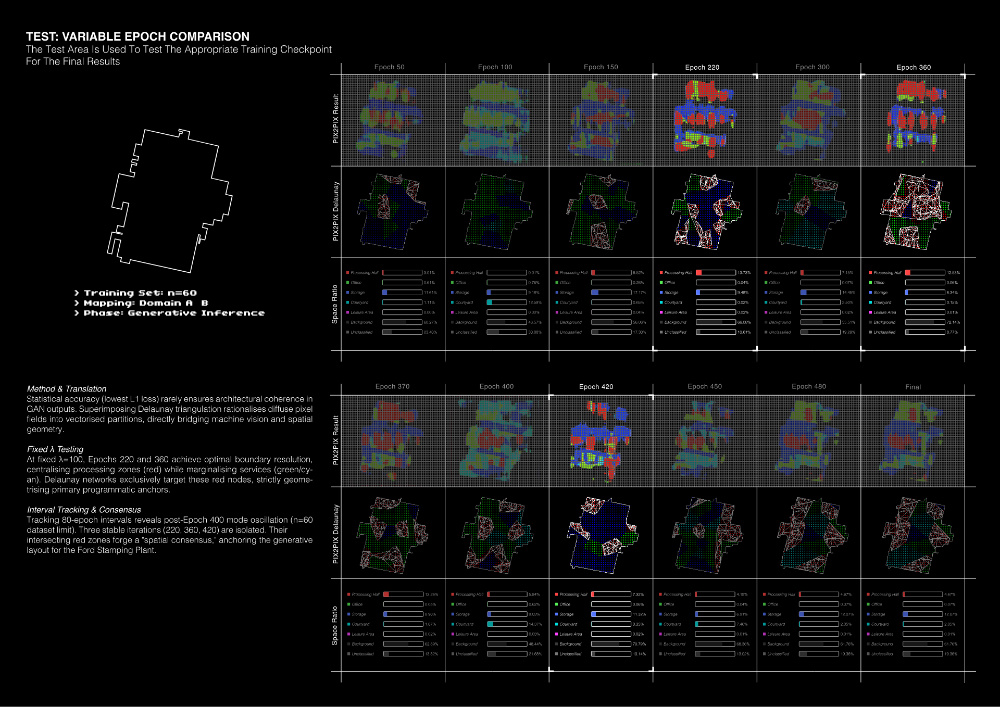
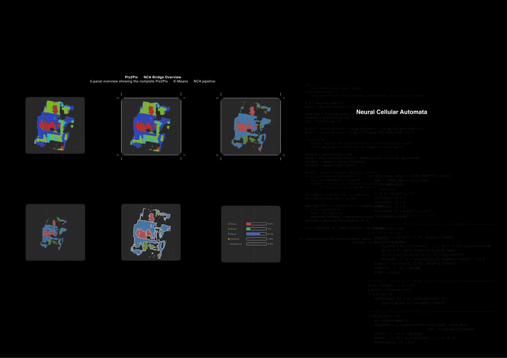
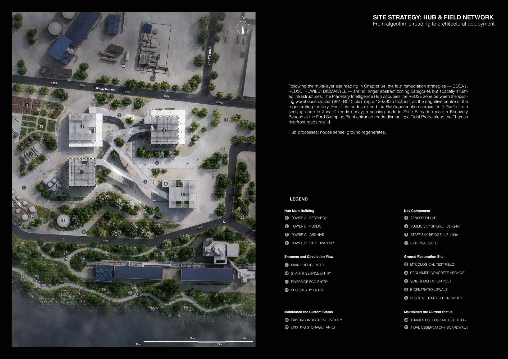

Read contamination
Fuse brownfield, waste, flood, population, building, and ecological indicators into a territorial risk picture.
将棕地、废弃物、洪水、人口、建筑和生态敏感性合成为一张风险底图。
PRD prototype / post-industrial remediation intelligence
A productized decision system that turns pollution legacies into an explainable path from territorial evidence to architectural deployment.
把污染遗留转译成从场地证据到建筑部署的可解释决策路径，展示项目如何从叙事变成产品逻辑。
Product thesis
Fuse brownfield, waste, flood, population, building, and ecological indicators into a territorial risk picture.
将棕地、废弃物、洪水、人口、建筑和生态敏感性合成为一张风险底图。
Explain why specific cells move to the front of the queue, and show the evidence behind each recommendation.
说明为什么某些网格被优先处理，并把推荐背后的证据展开给评审看。
Translate evidence into Decay, Reuse, Rewild, and Dismantle programs, each with physical and digital workstreams.
把数据判断转译为四种空间策略，每种策略都有实体场地和数字界面。
Use ML generation, field sensing, and the Hub architecture to keep remediation adaptive over time.
通过机器学习、现场感测和 Hub 建筑形成持续更新的修复反馈回路。
GIS Risk Atlas
The atlas compresses the PDF's territorial readings into a product view where layers can be tested as weighted evidence.
将 PDF 中的场地阅读转化为 GIS 风险界面，图层可以开关并作为加权证据参与判断。

Dagenham Dock 的 GIS 证据底图：8×8 分析网格叠加棕地、废弃物、水文风险、人口密度、建筑覆盖与生态敏感性，用来判断哪些场地单元应优先进入修复队列。
Active evidence layers
Atlas recommendation
Flood exposure, waste infrastructure, and population density keep the site in a high urgency band.
Algorithmic Site Selection
Cells are treated as product candidates. The demo exposes the feature mix instead of hiding the selection inside a black box.
把每个 SITE 当成可比较的候选单元，直接展示特征组合，而不是把聚类结果藏在黑箱里。

Selected cell
Strategy Operating System
Each strategy couples a physical territory with a digital interface, turning the thesis into a legible operating system.
四种策略既是空间干预，也是可部署的产品模块，用来说明修复系统如何运行。

ML Design Engine
The machine learning layer is presented as an explainable simulation: input, generated strategy field, cellular evolution, and decision readout.
机器学习部分以可解释模拟呈现，强调输入、生成、细胞自动机演化与最终决策读数的关系。
Pix2Pix Evidence Chain / 图纸证据链
Pages 38-41 make the generative step legible: Pix2Pix is framed as a translation chain from plan typology samples to spatial prediction, then checked through epoch comparison, Delaunay reading, and area ratio judgement.
第 38-41 页把 Pix2Pix 的生成逻辑展开成一条清晰证据链：从类型平面样本、配对标签、训练推理，到 epoch 对比、Delaunay 读取和面积比例判断。





The six small maps show the Pix2Pix to NCA bridge: raw generated field, cleaned strategy zones, boundary repair, and final area readout.
Stage 03
The generated field is stabilized into strategy zones with noise, boundaries, and persistence made visible.
Planetary Intelligence Hub
The Hub translates the operating system into a spatial product: four towers, field nodes, public routes, labs, and live monitoring.
Hub 是整个系统的实体界面，把四塔、现场节点、公共路径、实验室和实时监测连接起来。

Current view
The product starts with a site plan that connects remediation plots, sensing nodes, circulation, and the four-tower Hub.
Product demo close